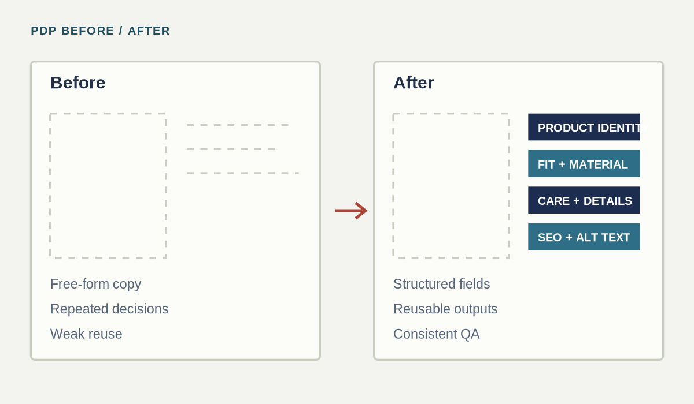
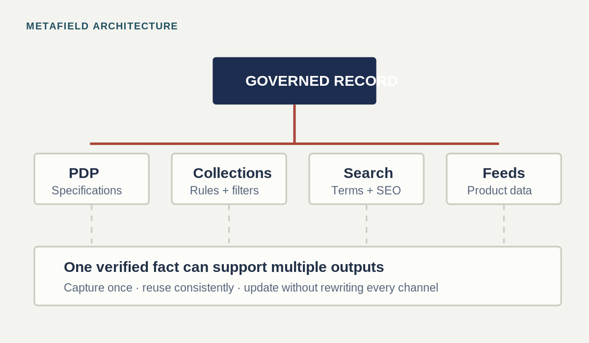
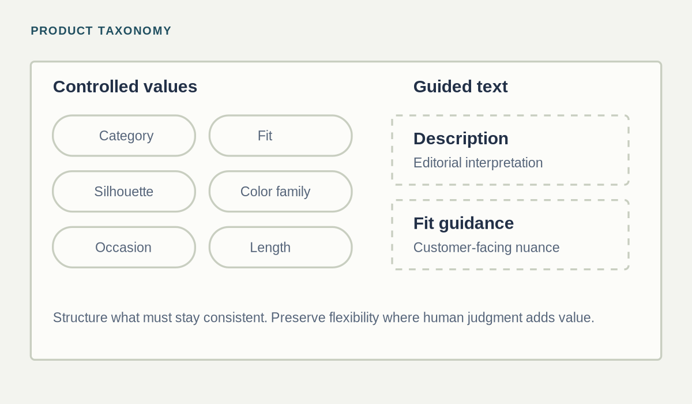
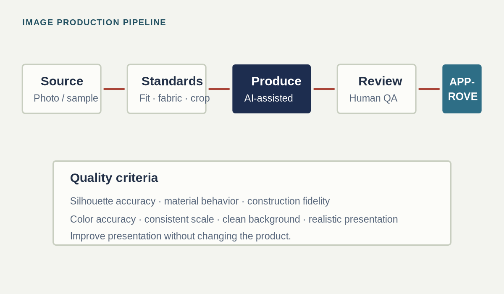
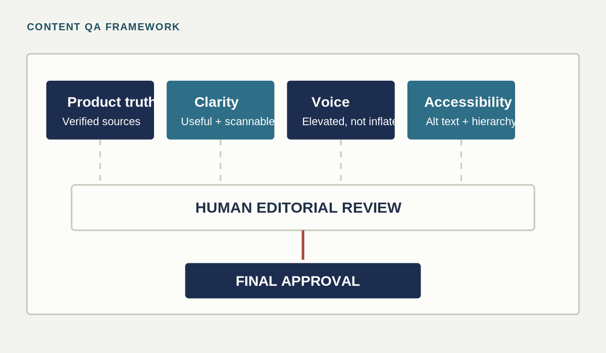
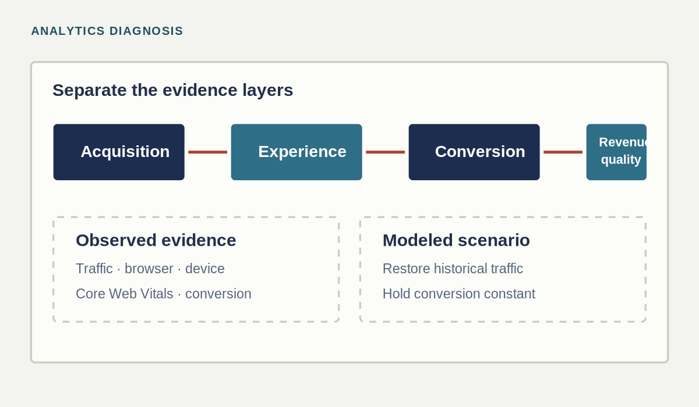

Systems in practice.
A lighter-weight gallery for proof that does not need to become another long case study.

PDP before-and-after logic
How product-detail pages evolved from isolated content blocks into reusable information structures.

Metafield architecture
Structured product attributes supporting PDPs, collections, search, SEO, feeds, and future automation.

Product taxonomy
Controlled values for product category, fit, silhouette, color family, occasion, and merchandising use cases.

Image-production pipeline
Ghost-mannequin and product imagery standards preserving shape, fabric, construction, color, and scale.

Content QA framework
Human review criteria for factual accuracy, brand voice, unsupported claims, accessibility, and customer usefulness.

Analytics diagnosis
Browser/device segmentation, traffic-versus-conversion modeling, and Core Web Vitals validation.
Short Stories
Brief accounts of specific problems, decisions, and outcomes from larger bodies of work.
Email lifecycle transformation
Problem
Email performance depended on campaign-by-campaign execution rather than a structured retention system.
Action
Built a more consistent lifecycle and campaign operation connecting consented audience growth, segmentation, content, and conversion measurement.
Result
Campaign-attributed conversions increased +550% in year one, +98% in year two, and +60% in year three; the consented audience expanded from approximately 700 to 10,000 subscribers (+1,329%).
Core Web Vitals recovery
Problem
Storefront performance issues created uncertainty about whether technical friction was limiting mobile revenue.
Action
Diagnosed performance constraints, prioritized changes, and validated progress using real-user Core Web Vitals.
Result
Performance moved from failing to fully green: LCP 28% faster, INP 70% faster, and CLS 90% lower.
AI-assisted product imagery pipeline
Problem
Product imagery needed to scale without losing luxury accuracy or misrepresenting construction and materials.
Action
Defined visual standards, prompt rules, escalation conditions, and human review loops for ghost-mannequin and product-image production.
Result
Created a repeatable production process that accelerated output while preserving product truth and quality control.
Product-feed and search recovery
Problem
Products were not consistently discoverable across search and shopping surfaces, limiting qualified acquisition.
Action
Connected product data, metadata, collection logic, feed readiness, and search visibility into one recovery framework.
Result
Redirected limited resources toward structural discoverability work rather than treating paid acquisition as the only lever.
Shopify theme and PDP modernization
Problem
The storefront needed a more flexible customer experience without breaking product operations or live commerce.
Action
Translated merchandising and UX needs into theme requirements, content hierarchy, reusable sections, and performance priorities.
Result
Created a stronger customer-facing foundation while preserving maintainability for ongoing publishing and merchandising.